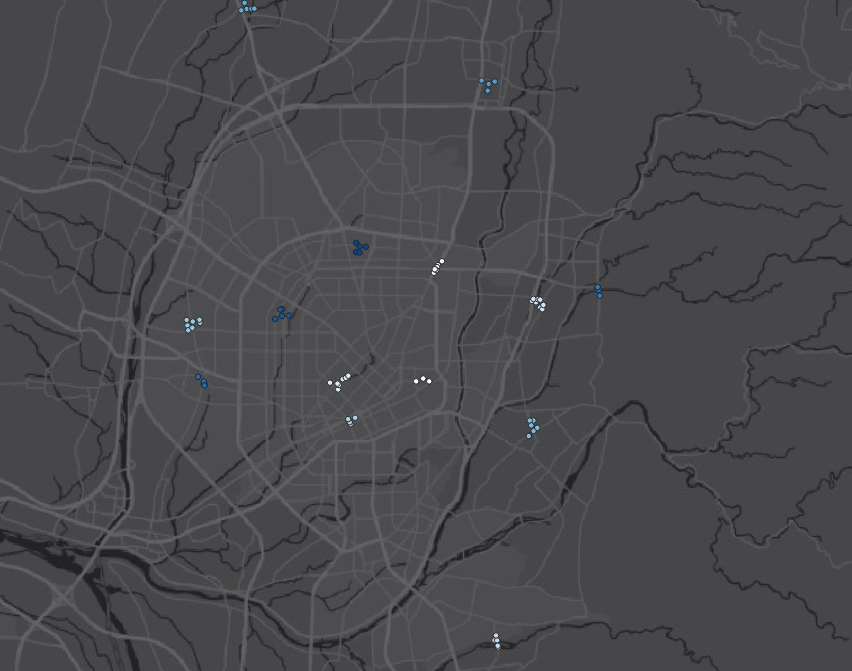
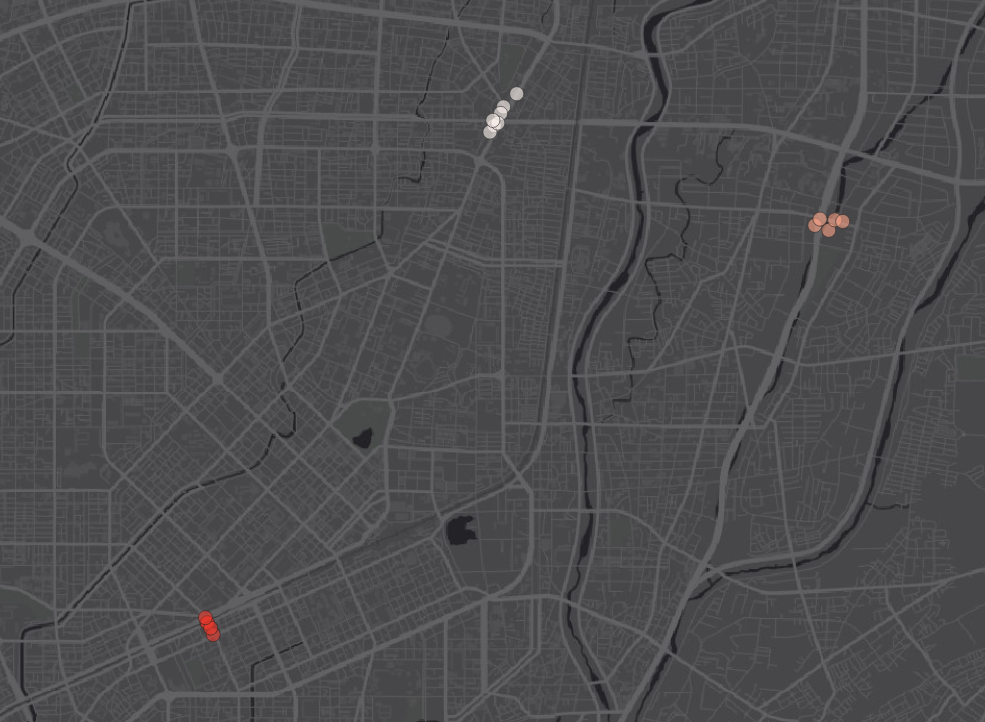

Taichung City Bike Accidents
Background
One of my favorite things to do when I’m back in Taiwan from DC is to bike using our bikeshare system YouBike. Nothing quite compares to biking home past midnight after fooling around with my friends in the heart of the city. As much as I enjoy biking, I think if I were to bike without bike lanes or sidewalks (which are both abundant in Taipei) I definitely would’ve been in some accidents.
This made me curious about the relationship between bike accidents and bike lanes. Do bike lanes actually protect bike riders as intuition would tell us?
Results
Short answer: no, not at all. In fact, there proved to be more traffic accidents involving bikes occuring along the bike lanes as shown below.

(red: accidents involving injuries; green: accidents without injuries; gray: bike lanes. )
Focusing solely on the bike lanes themselves, there isn’t evidence to show that bike lanes promote safety for riders. In fact, along the bike lanes there exists a higher percentage of red data points compared to green data points, meaning that the existence of bike lanes is seemingly linked to a higher frequency of injury-causing accidents.
This directly contradicts what I initially hypothesized and what intuition would tell us. However, upon closer inspection the finding actually makes sense due to sampling bias and reporting bias. Bike lanes attract more bikers, therefore leading to a higher number of raw accidents. It’s highly likely the probability of accidents happening on bike lanes are lower, and that the higher ridership makes it seem like bike lanes are more dangerous. Unfortunately, I couldn’t find ridership data to statistically confirm this.
As this seemed to be a dead end, I moved on to consider whether there are major hotspots of accidents. Locating these dangerous areas could also help improve bike safety in the city. I ran a DBSCAN model based on the Euclidean distances among accident points and discovered the following 3 hotspots, all in the city center. They’re located at Xuefu Rd (學府路), Yuxian Rd (育賢路), and Beitun Rd (北屯路). This information can be used to explore whether these hotspots have anything in common (ex. road design, proximity to transportation hubs), thereby guiding policy and infrastructure improvements.

(hotspot clusters derived from DBSCAN with \(\epsilon\) = 150 meters and n = 5)
Finding Data
City governments in Taiwan maintain open data platforms with generally useful and high quality data. A quick search allowed me to locate a geographic dataset of all bike lanes in Taichung. The data was in Shapefile format and very easy to add to QGIS.
Next up was finding data for traffic accidents. I couldn’t find any datasets specifically for bike accidents even outside of the offical open data platforms. However, I did manage to find datasets recording all traffic accidents from the city’s police department organized by month. These datasets have fields documenting vehicle types, allowing me to extract specific incidents I need. The categories were labeled by numbers and alphabets without a key explaining what each combination meant, so it was difficult trying to decipher the datasets.
Luckily I managed to find a file that provides corresponding labels and explainations, solving this issue. The most important category for the project was 26—Parties Involved (Categories). Inside of it, F01 and F02 refer to bicycles and e-bikes respectively. These mark the accidents I need to filter out for.
Data Cleaning
Data cleaning was relatively straightforward. The datasets matched well with each other. I only had to correct some inconsistencies in field names; inconsistencies with half-width and full-width characters were the most difficult to catch. Traditional Chinese is typed with full-width characters, and its punctuations are full-width characters as well. Sometimes a file would have full-width parentheses and another would have half-width ones. None of this was that tricky. It just needed standardization.
I first collectivized all the files (separated by month) into one. After that I just needed to extract the data points I’m interested in, which are accidents with F01 and F02 labels. All the data points had fields for their coordindates in longitude and latitude, so I can use the fields to map them in QGIS. The field for injury degree was also interesting to me, as I wondered if there might be a connection between that and the proximity to bike lanes.
Exploring Data
Importing the files into QGIS was disappointing. I didn’t see the type of relationship I was expecting. Instead, the data points told the opposite story: bike lanes are somehow more dangerous for bikers. When I divided up the data points based on whether or not they resulted in injuries, the same conclusion is reached.
However, that is likely because of sampling bias. It’s reasonable that there are more accidents near and along the bike lanes because bike lanes have significantly higher ridership. So it’s possible and likely that bike lanes do lower the probability of injuries, it’s just that the high ridership means that the raw number of accidents occuring along bike lanes are deceptively high.
Similarly, the number of injury-causing accidents being significantly higher than those that don’t (1911 and 400) can be explained by reporting bias. The more serious an accident is, the more likely people report it; smaller and less serious accidents are ommited from the data because of this bias.
It would be interesting if I could gather more data to investigate whether these biases are statistically true, however I couldn’t find the information I needed anywhere. Specifically, ridership data for bike lanes and regular roads would allow me to compare the probability of riders being injured on bike lanes with the probability of them being injured on regular roads, allowing me to assess whether my explanation is in fact accurate.
At this point, I pivoted to locating potential hotspots of bike accidents. I thought it would be useful if I could identify areas with statistically high frequencies of bike accidents. To do this, I needed to algorithmically cluster the data points based on proximity.
DBSCAN
I chose to use DBSCAN to cluster for hotspots because of its ability to identify irregular shapes. Another simple algorithm I could use would be K-Nearest-Neighbor, however that algorithm would not allow me to accurately capture clusters because it forms clusters based on a circular radius. For this case, hotspots aren’t always going to be circular in shape. For example, if a road has significant high speed traffic and poor planning, that entire road could be a danger zone for bikes. KNN would not be able to fully capture this because it’s only sensitive to data points within a circular area. On the other hand, DBSCAN is much more equipped to detect clusters of irregular shapes because it forms clusters based on the proximity of data points. Starting from one data point, if another data point is within a set distance from the origin, the cluster is expanded to include the second data point until no other data point can be added to the cluster. This means that DBSCAN would be sensitive to straight line hotspots along roads whereas KNN would not be as suitable.
DBSCAN takes in two parameters, \(\epsilon\), the maximum distance between two data points. and n, the minimum number of data points needed to form a cluster. I started with initial settings at \(\epsilon\) = 250 meters and n = 5. However, that seemed to be too wide, resulting in hotspots that are far away from each other and not related in terms of traffic.
(hotspot clusters derived from DBSCAN with \(\epsilon\) = 200 meters and n = 5)

(example cluster; data points are from completely different roads)

(hotspot clusters derived from DBSCAN with \(\epsilon\) = 180 meters and n = 5)

(example cluster; some clusters are still from different roads)
(hotspot clusters derived from DBSCAN with \(\epsilon\) = 150 meters and n = 5)

(example cluster; clusters are now compact and traffically related)